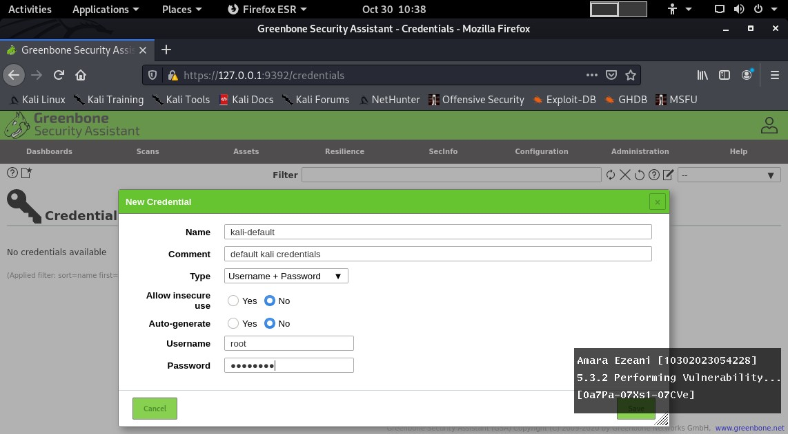
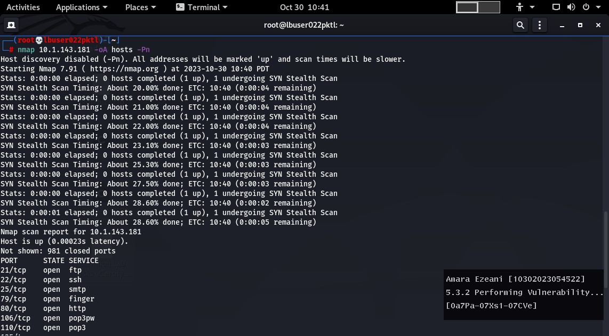
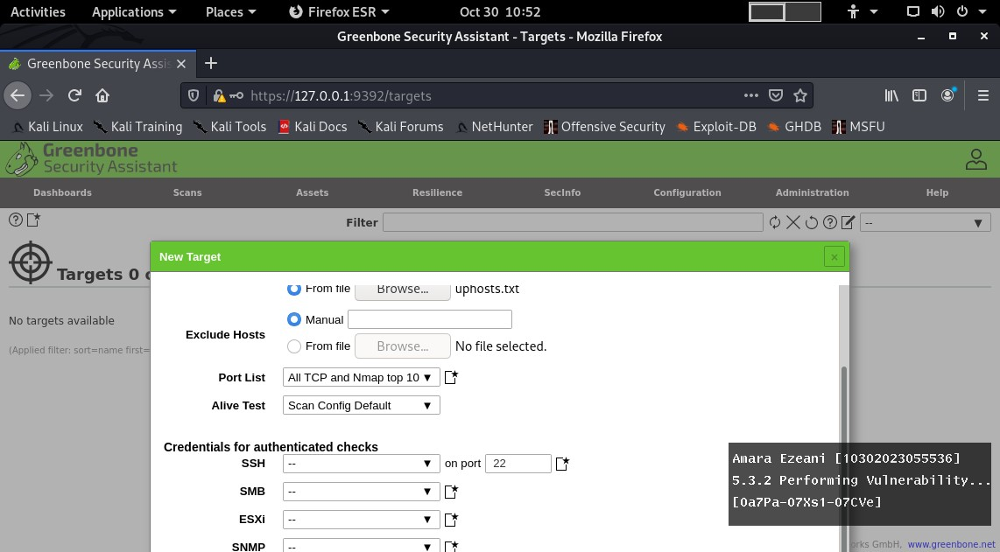
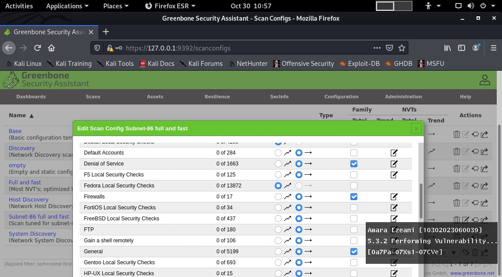
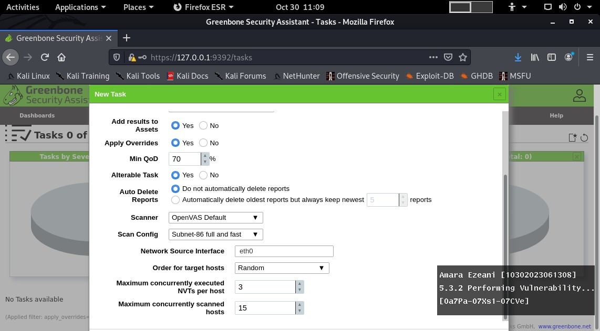

Scanning activities - Ucertify

Using the access code given by the teacher, we were to scan certain activities provided in the Ucertify website and some of the results are as follow:
5.3.1 - Conducting vulnerability scanning using Nessus
5.3.2 - Performing vulnerability scanning using OpenVas
At this stage, I entered the details provided for the task below as follow:
At this stage, I used the nmap command alongside the IP address provided below as follow:
At this stage, I encountered a problem because i couldn't see the 'ok' button to proceed with the task. i had to skip this step as a result of this. The result is as follow:
At this stage, I encountered the same problem as the previous step. The result is as follow:
At this stage, I encountered the same problem from the previous steps. The result is as follow:
As a result of this, I wasn't able to carry out this scanning activity successfully.